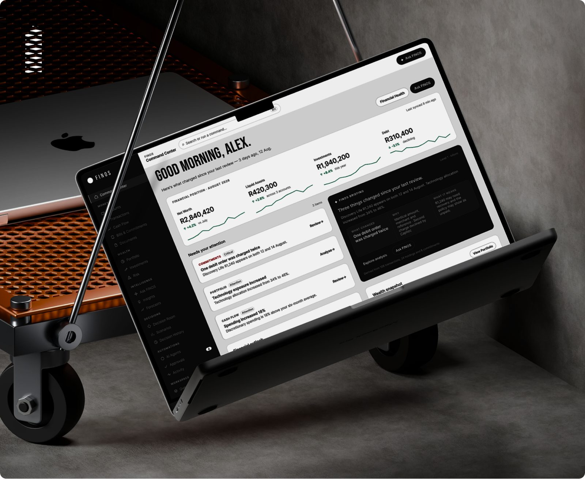
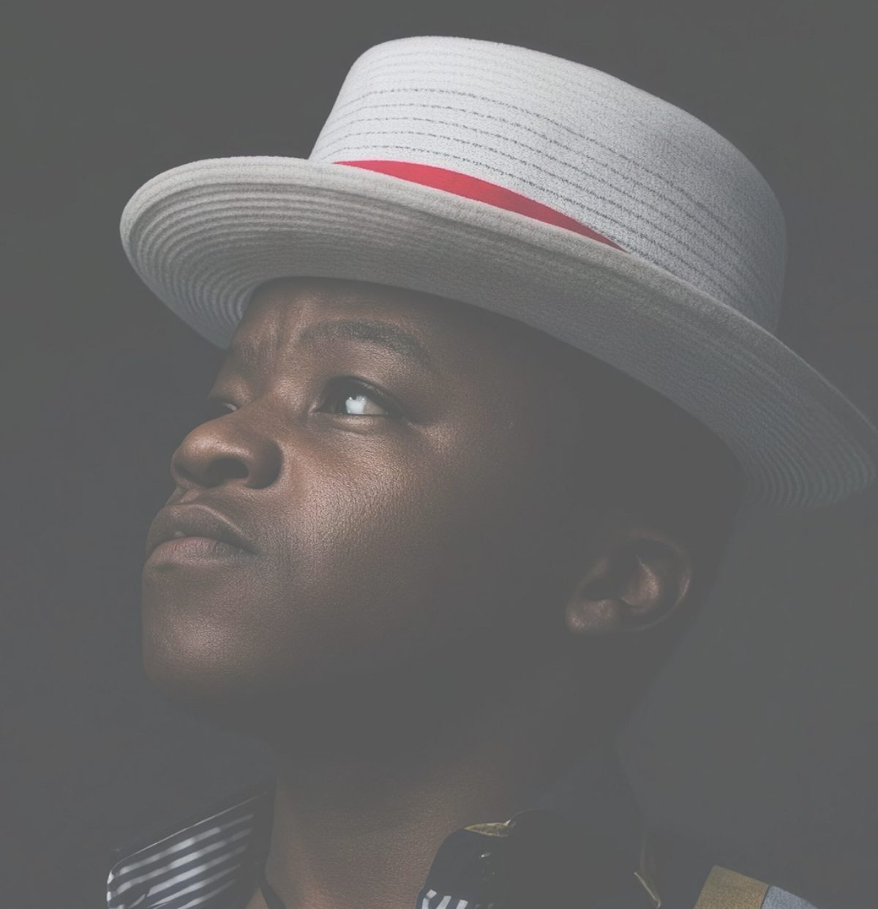

Selected Work
Products built around real problems.
A selection of products, systems and digital experiences spanning finance, enterprise, operations, connectivity and consumer experiences.
View All Case StudiesGauteng . Johannesburg
I design complex digital products that make difficult things feel simple.
I'm Sphamandla Xaba, a Product Designer and AI UX Designer focused on complex products, operational systems and AI-powered experiences. I combine UX strategy, product thinking, interaction design and emerging AI capabilities to turn ambiguous problems into useful, intuitive products.
Selected Work
A selection of products, systems and digital experiences spanning finance, enterprise, operations, connectivity and consumer experiences.
View All Case Studies
01 — FINOS
Designing an AI-powered financial operating system that brings financial intelligence, decision-making and portfolio management into one connected experience.
View case study
02 — ManaGem
Exploring how information, workflows and operational processes can be structured into a clearer and more usable enterprise experience.
View case study
03 — WasteMart
A digital product concept focused on connecting customers, services and operational workflows through a clearer digital experience.
View case study
04 — CMAXX
Redesigning the Cmaxx digital experience to make its connectivity offering easier to understand while creating a stronger path from discovery to conversion.
View project
05 — WhatsApp Home Assist
Exploring how conversational interfaces can simplify everyday service interactions through WhatsApp.
View projectWhat I Design
The strongest digital experiences happen when strategy, technology and interaction design work together.
From ambiguous problems to structured product experiences, I design interfaces and journeys that balance user needs, business objectives and technical realities.
I turn complicated workflows, information architectures and operational processes into understandable digital systems.
I connect research, product thinking, interaction design and validation to make better design decisions—not simply better-looking interfaces.
I explore how AI can improve product experiences through intelligent assistance, automation, recommendations, contextual interactions and conversational interfaces.


Value / Capabilities
I bring a product mindset grounded in clarity, systems thinking and intentional use of technology. I focus on understanding real user and business problems, then designing solutions that are not only functional, but meaningful, scalable and easy to understand.
I look beyond individual screens and consider how workflows, information, interactions and experiences connect.
I consider users, business objectives, technology and constraints together.
I use AI both as a design capability and as a medium for exploring new product experiences.
I care about hierarchy, typography, interaction, consistency and the details that make products feel finished.
Value / Capabilities
I'm Sphamandla Xaba, a South African Product Designer and AI UX Designer interested in the intersection of product design, complex systems and emerging technology. My work spans AI products, enterprise systems, operational platforms, websites and digital experiences.
I enjoy working on problems where the challenge isn't simply making an interface look good, but figuring out how the experience should actually work.

Have a complex product problem?
I'm interested in working with teams building products that solve meaningful problems—and figuring out how those products can become simpler, smarter and more useful.